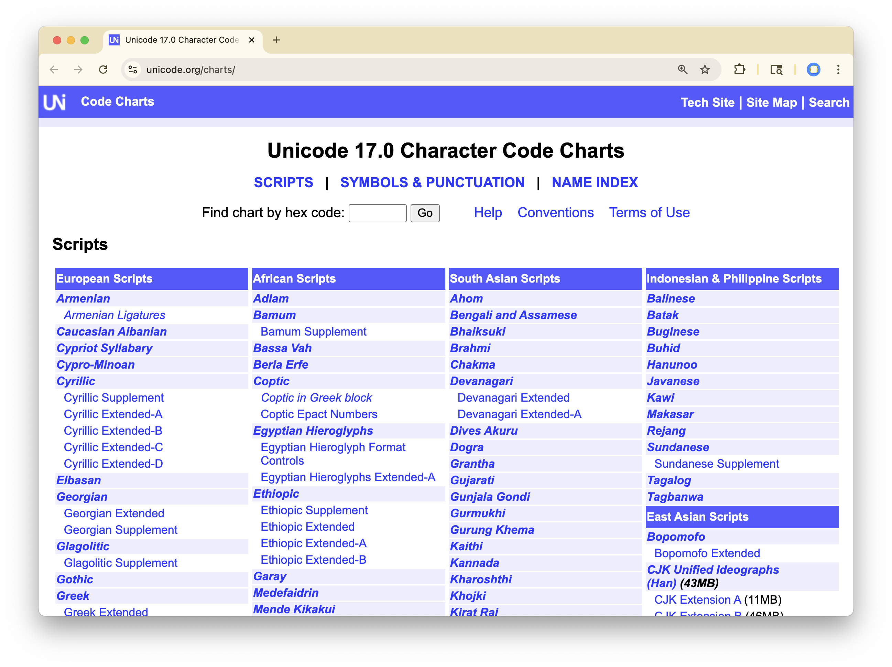

Strings I
Parsing text with regular expressions
Agenda
- Fundamentals of Character Strings
- Stringr
- Regular expressions
- Literal Characters
- Metacharacters
- Wildcards
- Quantifiers
- Anchors
- Character Sets
- Character Classes
Question
What is the distribution of majors in this course?
# A tibble: 202 × 2
major excited
<chr> <chr>
1 Applied mathematics Learning how to use R
2 Psychology & Data Science To learn more about how to manipulate and w…
3 Statistics Learning the R programming language properl…
4 Statistics to gain a deeper understanding of R and und…
5 math major + ds minor Learn real skills
6 Economics and minor Data Science Being able to advance my knowledge in R
7 Political Science excited to learn how to code in RStudio
8 Statistics I am most excited about being able to learn…
9 Statistics + Economics Learning R and how to process data!!
10 Statistics computation in stats
# ℹ 192 more rowsFundamentals of Strings
A character vector is a set of strings, each of which has a number of characters (nchar()).
[1] 2What is the lengthiest major?
# A tibble: 202 × 3
major excited nchar
<chr> <chr> <int>
1 Neuroscience, Molecular and Cell Biology, Minor: Data Science I'm exci… 61
2 Cognitive science and legal studies, data science minor To learn… 55
3 Statistics & Environmental Economics and Policy I am exc… 47
4 Cognitive Science/Media Studies + Data Minor <NA> 44
5 Applied Mathematics & Integrative Biology I want t… 41
6 Cognitive Science with Data Science minor Gaining … 41
7 Statistics, Economics, Political Economy Labs 40
8 Statistics and Business Administration Learning… 38
9 Integrative Biology and Public Health As a PH … 37
10 Legal Studies (Minor: Public Health) I am exc… 36
# ℹ 192 more rowsCreating Strings
- Wrap the characters either in
"or'. - Combine strings with
paste()
Creating Strings
- Wrap the characters either in
"or'. - Combine strings with
paste()
[1] "ba,na,na"Creating Strings
- Wrap the characters either in
"or'. - Combine strings with
paste()
[1] "banana"Changing case
tolower()makes all letter characters lowercasetoupper()makes all letter characters uppercase
Quotations
Error in parse(text = input): <text>:1:13: unexpected symbol
1: "She said, "Naaaah...
^Include a quotation in a string by using '.
Escape Characters
You can change the default meaning of a given character by escaping it: prepending it with \.
"normally starts or ends a string.\"is the double-quote character.tnormally is the lowercase Latin t.\tis a tab space.nnormally is the lowercase Latin n.\nis a new line.U0001F600normal is just that.\U0001F600is 😀.

Stringr
stringr
A set of functions for string manipulation with a standard format (called an “API”).
str_length(): analog ofnchar()str_c(): analog ofpaste()str_view()str_sub()str_detect()
str_split()str_match()str_replace()str_extract()
str_view()
Show more readable version of strings. Also see how a pattern matches.
str_view()
Show more readable version of strings. Also see how a pattern matches.
[1] "by only me is your doing, my darling)\n\t\t\t\t\ti fear👻"str_sub()
Subset strings by position.
# A tibble: 202 × 2
major first_letter
<chr> <chr>
1 Applied mathematics A
2 Psychology & Data Science P
3 Statistics S
4 Statistics S
5 math major + ds minor m
6 Economics and minor Data Science E
7 Political Science P
8 Statistics S
9 Statistics + Economics S
10 Statistics S
# ℹ 192 more rowsstr_detect()
Detects the presence or absence of a pattern in a string
# A tibble: 64 × 1
major
<chr>
1 Statistics
2 Statistics
3 Statistics
4 Statistics + Economics
5 Statistics
6 Statistics, Economics, Political Economy
7 Statistics
8 Statistics + Integrative Biology
9 Statistics
10 Statistics
# ℹ 54 more rows# A tibble: 64 × 1
major
<chr>
1 Statistics
2 Statistics
3 Statistics/Pure Mathematics
4 Statistics
5 Economics, Statistics
6 Statistics
7 Applied Mathematics and Statistics
8 Statistics
9 Statistics
10 Statistics
# ℹ 54 more rows# A tibble: 75 × 1
major
<chr>
1 Statistics
2 Statistics
3 Statistics
4 Statistics + Economics
5 Statistics
6 Statistics, Economics, Political Economy
7 Statistics
8 Statistics + Integrative Biology
9 Statistics
10 Statistics
# ℹ 65 more rows# A tibble: 11 × 1
major
<chr>
1 statistics
2 statistics
3 statistic
4 statistic
5 Engineering Math and statistics
6 statistics and economics
7 statistics
8 stats，applied math
9 statistics
10 stats
11 statistic How do we (succinctly) specify that we want to detect “Statistics”, “Stat”, “statistics, and”stat”?
Either upper- or lower-case “s”, followed be “tat” anywhere in the string.
Regular expressions
Regular expressions
A sequence of characters expressing a string or pattern to be searched for within a longer piece of text.
- Literal characters
- Metacharacters
- Character sets
- Character classes
Literal characters
Match the letter “a”.
[1] │ Applied m<a>them<a>tics
[2] │ Psychology & D<a>t<a> Science
[3] │ St<a>tistics
[4] │ St<a>tistics
[5] │ m<a>th m<a>jor + ds minor
[6] │ Economics <a>nd minor D<a>t<a> Science
[7] │ Politic<a>l Science
[8] │ St<a>tistics
[9] │ St<a>tistics + Economics
[10] │ St<a>tistics
[11] │ St<a>tistics, Economics, Politic<a>l Economy
[12] │ st<a>tistics
[15] │ Applied M<a>th
[16] │ St<a>tistics
[17] │ Public He<a>lth
[18] │ St<a>tistics + Integr<a>tive Biology
[19] │ Applied M<a>th
[21] │ St<a>tistics
[22] │ Public he<a>lth
[24] │ St<a>tistics
... and 139 moreLiteral characters
Match the letter “ta”.
[2] │ Psychology & Da<ta> Science
[3] │ S<ta>tistics
[4] │ S<ta>tistics
[6] │ Economics and minor Da<ta> Science
[8] │ S<ta>tistics
[9] │ S<ta>tistics + Economics
[10] │ S<ta>tistics
[11] │ S<ta>tistics, Economics, Political Economy
[12] │ s<ta>tistics
[16] │ S<ta>tistics
[18] │ S<ta>tistics + Integrative Biology
[21] │ S<ta>tistics
[24] │ S<ta>tistics
[25] │ s<ta>tistics
[26] │ S<ta>tistics
[27] │ Da<ta> Science and Applied Math
[31] │ S<ta>tistics
[32] │ Da<ta> Science & S<ta>ts
[34] │ S<ta>tistics
[35] │ Da<ta> Science
... and 93 moreLiteral characters
Match the letters “sta”.
Metacharacters
Non-letter characters with special meaning.
.?+*[]- etc.
Wildcard .
. will match any single character
“a” followed by any character.
Any character followed by the characters “tat”.
[3] │ <Stat>istics
[4] │ <Stat>istics
[8] │ <Stat>istics
[9] │ <Stat>istics + Economics
[10] │ <Stat>istics
[11] │ <Stat>istics, Economics, Political Economy
[12] │ <stat>istics
[16] │ <Stat>istics
[18] │ <Stat>istics + Integrative Biology
[21] │ <Stat>istics
[24] │ <Stat>istics
[25] │ <stat>istics
[26] │ <Stat>istics
[31] │ <Stat>istics
[32] │ Data Science & <Stat>s
[34] │ <Stat>istics
[37] │ <Stat>istics
[38] │ <Stat>istics
[42] │ <stat>istic
[43] │ Data Science, <Stat>istics
... and 66 moreBut what if the string has an actual period?
[1] "Learning the R programming language properly."How do I match "properly." but not "properly!" (or any other character)?
The first
\escapes it for the string, the second\escapes it for the regex.
Quantifiers
?: Matches 0 or 1 of the preceding character+: Matches 1 or more of the preceding character*: Matches any number of the preceding character{3}: Matches exactly three of the preceding character
[1] │ <a>
[2] │ <ab>
[3] │ <ab>b[2] │ <ab>
[3] │ <abb>[3] │ <abb>Character Sets
You can demarcate a set of characters with [].
Your Turn
Question: Write down 5 different regular expressions to match <Naaaah>.
01:30
Your Turn
[1] │ She said, "<Naaaah>...", and walked away.Question: Write down 5 different regular expressions to match <Naaaah>.
How do we (succinctly) specify that we want to detect “Statistics”, “Stat”, “statistics, and”stat”?
Either upper- or lower-case “s”, followed be “tat” anywhere in the string.
"[sS]tat"
What is the distribution of majors in this course?
What is proportion of students major in Stats?
# A tibble: 202 × 2
major view_stat
<chr> <strngr_v>
1 Applied mathematics Applied mathematics
2 Psychology & Data Science Psychology & Data Science
3 Statistics <Stat>istics
4 Statistics <Stat>istics
5 math major + ds minor math major + ds minor
6 Economics and minor Data Science Economics and minor Data Science
7 Political Science Political Science
8 Statistics <Stat>istics
9 Statistics + Economics <Stat>istics + Economics
10 Statistics <Stat>istics
# ℹ 192 more rowsWhat is the distribution of majors in this course?
What is proportion of students major in Stats?
# A tibble: 202 × 3
major view_stat is_stats
<chr> <strngr_v> <lgl>
1 Applied mathematics Applied mathematics FALSE
2 Psychology & Data Science Psychology & Data Science FALSE
3 Statistics <Stat>istics TRUE
4 Statistics <Stat>istics TRUE
5 math major + ds minor math major + ds minor FALSE
6 Economics and minor Data Science Economics and minor Data Science FALSE
7 Political Science Political Science FALSE
8 Statistics <Stat>istics TRUE
9 Statistics + Economics <Stat>istics + Economics TRUE
10 Statistics <Stat>istics TRUE
# ℹ 192 more rowsWhat is the distribution of majors in this course?
What is proportion of students major in Stats?
# A tibble: 1 × 1
p_stat
<dbl>
1 0.426